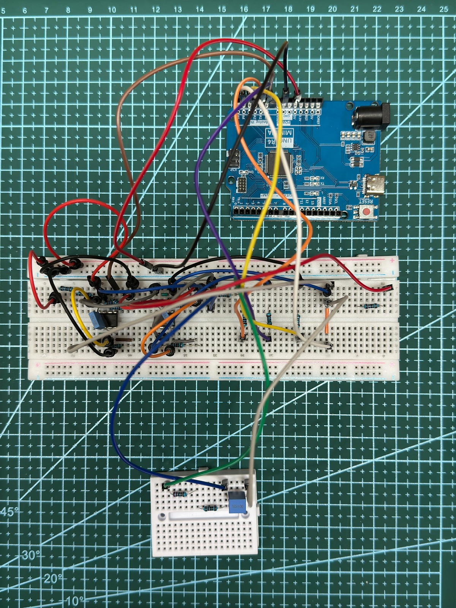

Five real circuits · five hidden faults · every forecast made before the measurement
Meta’s Muse Spark reads the schematic and chooses its own experiments on a real board. Every forecast is frozen before the measurement and checked against it by code; the fault stays sealed until the verdict.
Drawn the schematic the model read
Built the mini board
A $40 bench the model never touches: one Arduino, one instrument board, and the mini board with the circuit from the drawing plus one sealed fault.

tools/photos-bench.json).The first power-on of a new board, when the output is not what the drawing says. The question at the bench is what to measure next, and which part to check.
The rule for all four: say what to expect before the measurement, be held to it by code, keep going until one explanation is left. That shows where the model contributed. It is not evidence that the model beats every rule-based method: on the earlier synthetic linear benchmark, an engine with a fixed plan reached the same count (development results).
The loop needs six things and none of them is electronic — a description of what was intended, explanations the model may propose, a simulator, an instrument with a fixed menu, a person for what the instrument cannot do, a sealed truth — so the same loop could run on a real PCB at first power-on, a thermal rig or a lab experiment. Not done here: the 9 mV allowance, the menu and the calibration would have to be qualified again.
The same order every time. Only the drawing changes.
Muse Spark vision turns the schematic image into parts and connections. A person confirms the reading. The model gets this drawing and the shared bench description, nothing else.
Muse Spark picks from a fixed menu of steps and sines, with or without a 9.99 kΩ load, and says why. The runner never picks for it.
Every explanation still standing predicts the next measurement. The forecast is hashed before the board is touched.
The Arduino UNO R4 fixture measures the real circuit. Explanations that miss by more than 9 mV, on the whole step or any region of it, are ruled out. If none survive, Spark may propose a part the drawing does not show.
The final forecast is pushed to GitHub, then two reserved inputs that were never used for fitting are measured.
When two explanations give the same waveforms, Spark names one part to read. Its expected range under each explanation is frozen first; the operator types one value; the same rule rules out.
The hidden fault, committed as a digest before the first measurement, is opened; code checks the digest against that commitment, and the verdict is printed beside it. SAM 3.1 outlines the bodies in the board photo; Spark vision points at the part.
Everything here was made in nine days, 27 October to 4 November 2026, by one person and two coding agents.
Muse Spark 1.3 (agent and vision) through the Meta Model API for every experiment choice, structure proposal, schematic read and body call; SAM 3.1 for every board segmentation. 101 Spark calls and 6 SAM calls across the five cases, about $1.01.
The model is not asked to explain a measurement someone made. It chooses the measurement; the forecast is frozen first and code checks it against the measurement; the fault it was never told stays sealed until the verdict. The experiments did not exist until the model asked for them.
Five completed cases are not an accuracy rate. Failed and abstained attempts are kept in the public ledger and named on the reports. Restored reruns show "no mismatch in the tests Spark chose", not a proof that every part is correct. The cases were known to the developers; this is not a blind test.
MIT-licensed repository with every event log, forecast hash, Spark request and the offline verifier.
Repository on GitHub